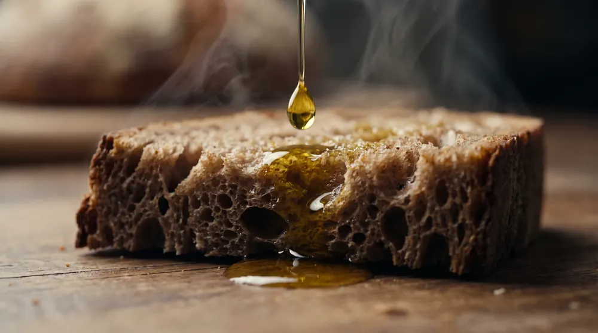
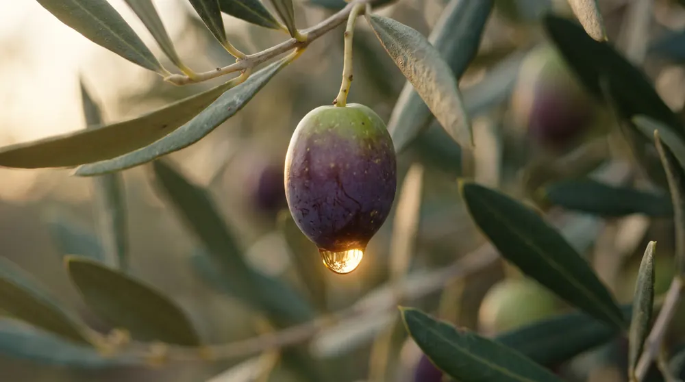
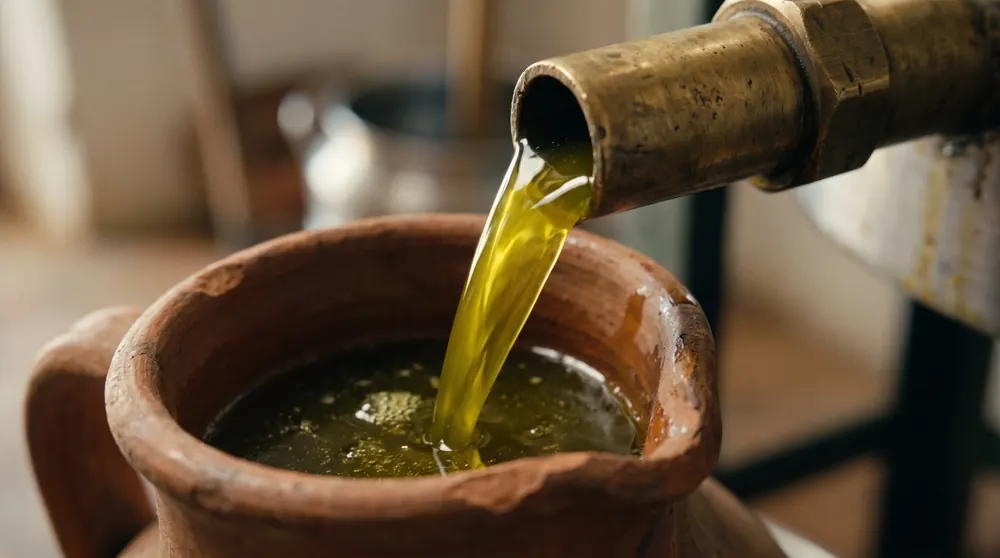
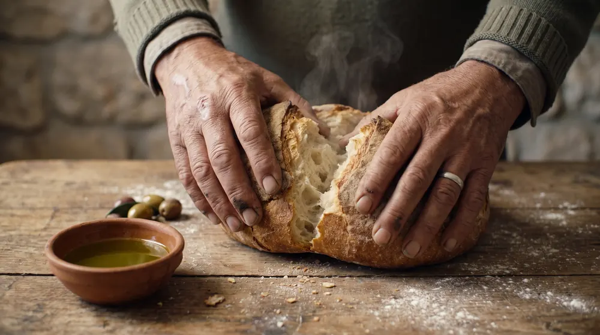
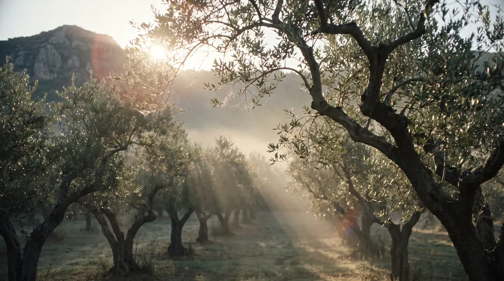
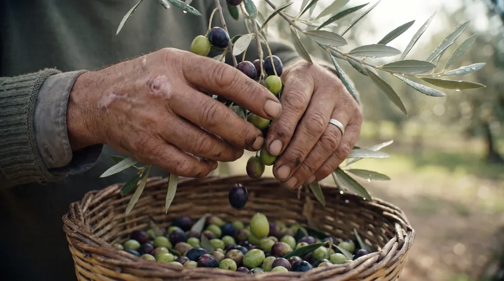
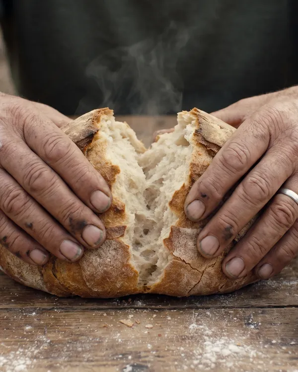

מדריכים על שמן זית
מה שלמדנו בארבעה דורות בכרם ובבית הבד: איך בוחרים שמן, איך שומרים אותו, איך מבשלים בו ומה קורה בעונת הקטיף.

איך בוחרים שמן זית כתית מעולהמה לבדוק לפני שקונים שמן זית: תאריך קטיף, בקבוק כהה, זן ומקור, חומציות וטעם. מדריך פשוט מבית בד בגליל העליון.
למה שמן זית טוב שורף בגרוןהעקצוץ בגרון והמרירות בשמן זית טרי מגיעים מפוליפנולים. מה הם, מה משפיע על הכמות שלהם ואיך יודעים כמה יש בבקבוק.
איך לשמור שמן זית כדי שיישאר טריאור, חום ואוויר הם האויבים של שמן זית. איפה לשמור את הבקבוק, כמה זמן הוא טוב אחרי שפותחים אותו ומה עושים עם פח של 4 ליטר.
אפשר לטגן בשמן זית?שמן זית כתית מעולה מתאים לטיגון קל, לצלייה ולאפייה. נקודת עשן, יציבות בחום, ומתי עדיף לשמור את השמן הטוב לטפטוף בסוף.
הזן הסורי: שמן הזית של הגלילסורי הוא זן הזית הוותיק והנפוץ בגליל. מאיפה הוא הגיע, מה הטעם שלו ולמה הוא נותן שמן חריף וארומטי.
עונת הקטיף: מתי קוטפים זיתים ומה זה קטיף ראשוןבישראל קוטפים זיתים מאוקטובר עד דצמבר. מה ההבדל בין זיתים ירוקים לשחורים בשמן, ולמה שמן מקטיף ראשון חריף ויקר יותר.
שמן זית כמתנה לחנוכהחנוכה הוא חג של שמן. איך בוחרים שמן זית למתנה, מה לכתוב בכרטיס, ועד מתי להזמין כדי שיגיע לפני 4 בדצמבר 2026.